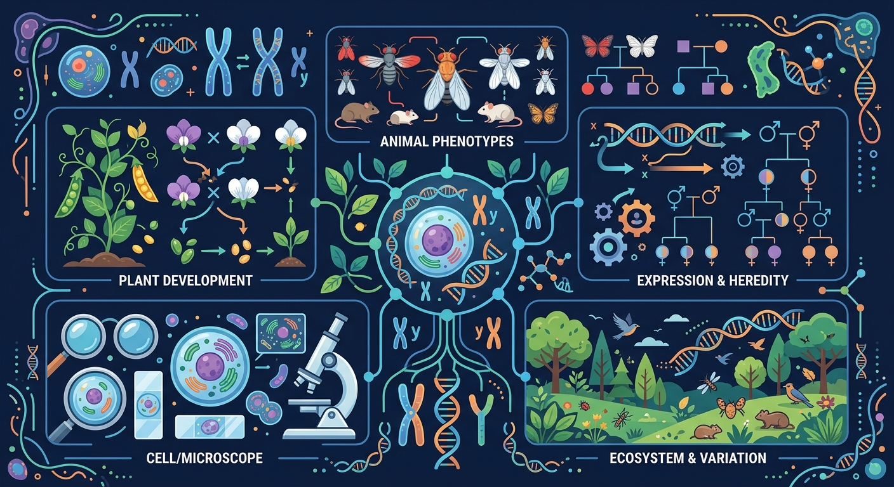
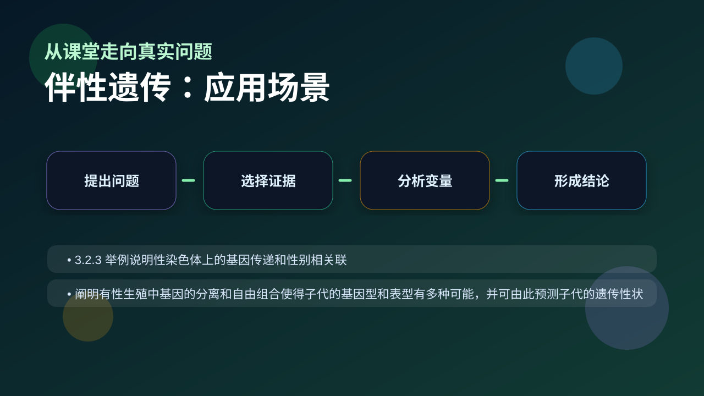

Gallery v1.0.0 · skill v7.14
遗传信息怎样被保存、表达、传递，又怎样影响性状？

先选一个卡点。后面的例子、互动和 AI 学伴都会围绕它给你最小提示。
选择或输入后，本课会围绕你的问题展开。
如果学生只说出概念名称，继续追问：题干里哪个证据最关键？这个证据对应分子、细胞、个体还是生态系统层级？如果改变 基因所在染色体、父母基因型、子女性别和显隐性关系 中的一个条件，结果会怎样？这三问能把答案从背诵推进到科学解释。
❓ 为什么红绿色盲传男不传女？
❓ 妈妈没病为啥儿子会得血友病？
❓ 伴性遗传的基因在哪个染色体上？
学完这一课，这些问题你都能自信地回答。
已经知道：学生此前已掌握基因位于染色体上的概念（如常染色体遗传），并学过孟德尔分离定律和显隐性关系，能分析简单的遗传图谱
但问题是：面对性染色体遗传时，常混淆X连锁隐性遗传（如红绿色盲）与常染色体遗传的传递规律，无法理解为何男性发病率更高及交叉遗传现象
所以学：当遗传咨询师分析一个红绿色盲家族系谱图时，需要准确判断致病基因来源、计算后代患病风险，并为夫妇提供生育建议
某男性红绿色盲患者的致病基因最可能来自？
设计一个实验，探究色盲在家族中的遗传规律。
现象入口：红绿色盲等性状在男女中的发病率不同，并常表现出交叉遗传特点。
机制解释：伴性遗传的基因位于性染色体上，X、Y染色体传递路径不同导致男女表现概率不同。
证据抓手：证据来自家系图、男女患病比例、父传子/母传子女路径。
变量线索：基因所在染色体、父母基因型、子女性别和显隐性关系。做题时先找变量，再判断机制，最后写证据。
情境：X隐性遗传中，儿子的X染色体来自母亲，因此母亲携带状态非常关键。
作答路径：现象：色盲男性（XᵇY）的儿子正常→机制：男性X染色体仅传女儿→证据：儿子Y染色体来自父亲，Xᵇ未传递；若女儿色盲（XᵇXᵇ），可反推母亲为携带者（XᴮXᵇ）
评分提醒：典型失分：1.未区分伴X显/隐性遗传特征；2.男性基因型漏写Y染色体；3.计算概率时忽略母亲携带者身份
观察红绿色盲患者家系图谱中男性患者多于女性的现象
分析伴X隐性遗传中Xᵇ基因从母亲传给儿子的特殊路径
阐明男性只有一条X染色体，携带Xᵇ即患病，女性需两条Xᵇ才发病
应用交叉遗传规律预测抗维生素D佝偻病（伴X显性）的传递特点

分析家系图时，先判断遗传方式，再分男女写基因型。
提交后会检查你的解释是否包含现象、机制和变量。
母亲携带者(XᴮXᵇ) × 父亲正常(XᴮY)：儿子一半患病，女儿全部正常但一半为携带者——这就是交叉遗传。
💡 探究任务：切换父亲是否患病，对比两组子代比例，解释“母病子必病、女病父必病”的系谱规律。
关于伴X隐性遗传，正确的是？
先独立作答，再点选项查看对错与错因。
下列关于色盲遗传的说法，正确的是
一个色盲男性与一个正常女性结婚，他们的后代中
一个色盲女性与一个正常男性结婚，他们的后代中
色盲基因位于____染色体上，属于____遗传。
答案：X 隐性
色盲基因位于X染色体上，是隐性遗传，需要两条X染色体都携带色盲基因才表现为色盲。
一个色盲男性的所有____都会是色盲，而所有____都会是携带者。
答案：儿子 女儿
色盲男性将Y染色体传给儿子，儿子若继承母亲的携带色盲基因的X染色体，则表现为色盲。女儿则继承父亲的色盲X染色体和母亲的正常X染色体，成为携带者。
抗维生素D佝偻病女性患者与正常男性结婚，预测子女患病概率时，最关键的依据是
学习小结：伴性遗传的核心是基因在性染色体上的特殊传递规律：伴X隐性呈现交叉遗传（如色盲男性XᵇY必传女儿Xᵇ），伴X显性（如佝偻病Xᴰ）女性患者可传子女
把伴性遗传当作普通常染色体遗传计算，忽略性别，是高频错误。
只说“增加/减少”不够，要写清改变的是 基因所在染色体、父母基因型、子女性别和显隐性关系 中的哪一个。
没有实验现象、曲线趋势或结构证据，答案就像猜测。
✅ X显性遗传时，父亲正常女儿也可能患病（如XD中Aa×aa）
💡 混淆显隐性遗传特点
✅ 观察系谱图中男女患病比例是否均衡
💡 忽视系谱图整体分析
口诀：母病子必病，父康女不传
类比：像公交专用道，X染色体上的基因有专属传递规则
视频用语音和动态画面回顾本课主线：问题情境 → 机制模型 → 证据判断 → 迁移应用。
先用 PhET 观察转录和翻译如何把遗传信息转成蛋白质，再回到本课的 Canvas 任务，把“信息流”与 伴性遗传 联系起来。
💡 操作提示：拖动调控元件，观察 mRNA 和蛋白质产量变化，思考“表达量变化”和“性状变化”之间的证据链。
写出红绿色盲女性携带者的基因型
分析父亲色盲、母亲正常时女儿携带致病基因的概率
设计果蝇眼色伴性遗传实验方案验证交叉遗传现象